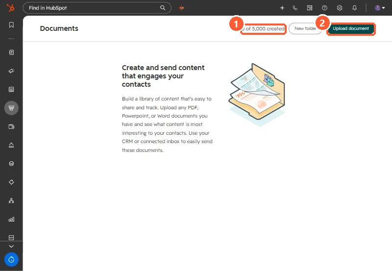

Short answer
Sales, Documents stores PDFs, PowerPoint and Word files you share with contacts. HubSpot tracks views when you share a document and notifies the sender. You can require recipients to enter an email before viewing, allow download, and show a link preview. When a document link goes in an email template, you must tick Require email to view document to track views. My demo portal shows a limit counter of 0 of 5,000 documents.
1. The tool
Open Sales > Documents. My demo portal has none yet.


2. Tracking options
- Require email to view: recipients enter an email first, so views tie to a person.
- Allow download: off if you want them to read it in the viewer only.
- Include link preview: shows a preview in the email body.
- In email templates, tracking only works with Require email to view ticked.
3. Documents versus files
HubSpot's file manager article says views cannot be tracked from the files tool. Use Files for images and assets in content, and Documents for anything you send to a prospect and want to follow up on.